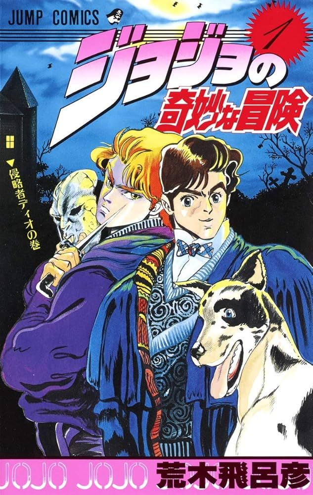
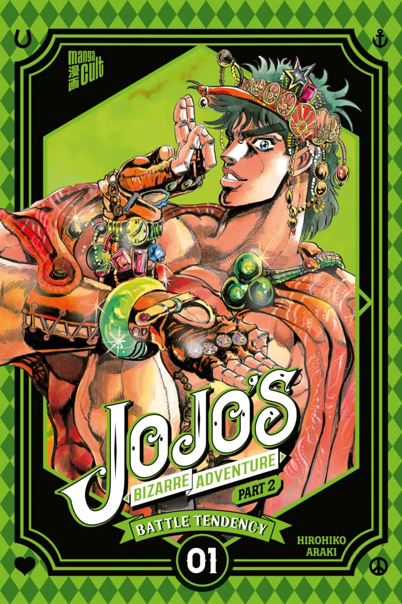
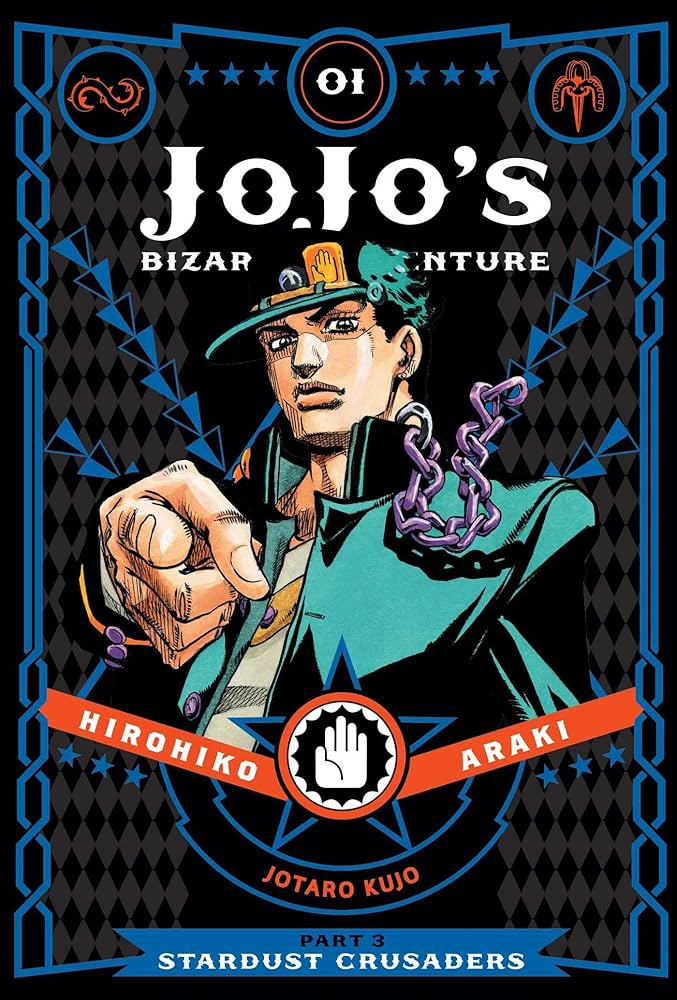
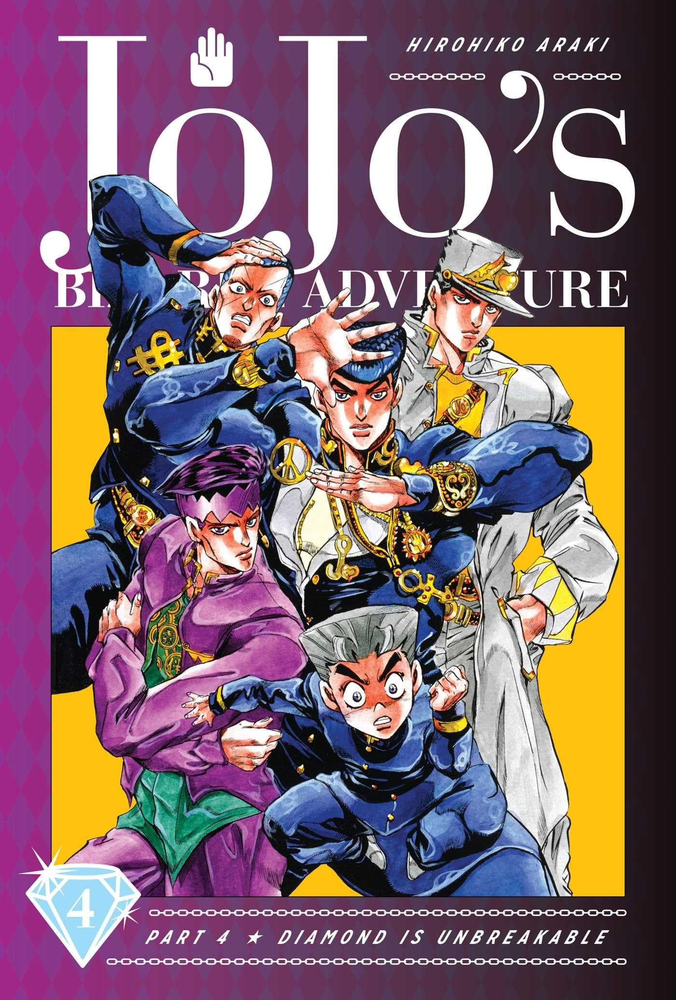
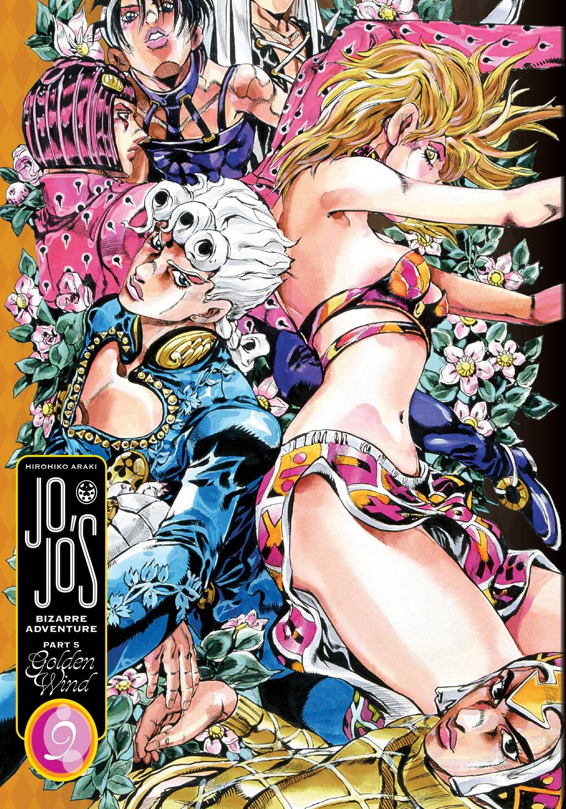
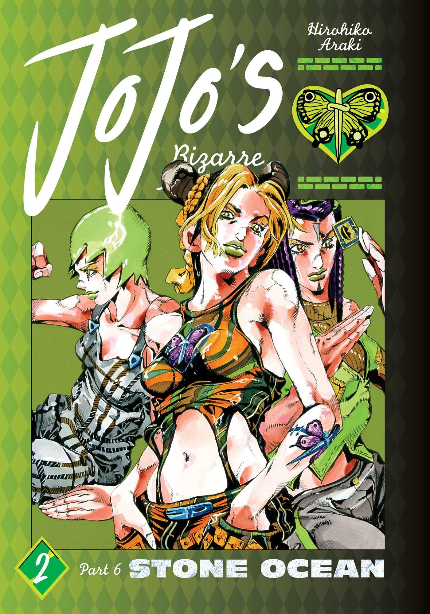

COLLECTIONS
- 
- 
- 
- 
- 
- 
ARAKI
Hirohiko Araki, the creator of JoJo's Bizarre Adventure,
has received several awards and recognitions over the years
for his work on the series and contributions to manga and pop culture.
Here are the notable ones:
1. Tezuka Osamu Cultural Prize Nominations
While Araki hasn't won this prestigious award,
JoJo's Bizarre Adventure has been nominated multiple times,
particularly for the Steel Ball Run and JoJolion arcs.
These nominations highlight the cultural and artistic impact of the series.
2. Shortlisted for the Eisner Award
In 2019, JoJo's Bizarre Adventure: Part 3 Stardust Crusaders was
shortlisted for the Will Eisner Comic Industry Award
in the category of Best U.S. Edition of International Material—Asia.
This nomination underscores the global appeal of Araki's work.
AWARDS
3. Michelangelo Buonarroti Award
Araki received this award in 2010 in Florence, Italy,
as recognition for his artistic contributions and unique style,
which blends Japanese manga aesthetics
with classical art influences.
4. Fine Arts Recommendation Award
In 2022, Araki was awarded this prestigious Japanese honor
in the category of Media Arts. It was a testament to his
influence on manga as a storytelling and artistic medium.